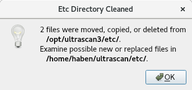
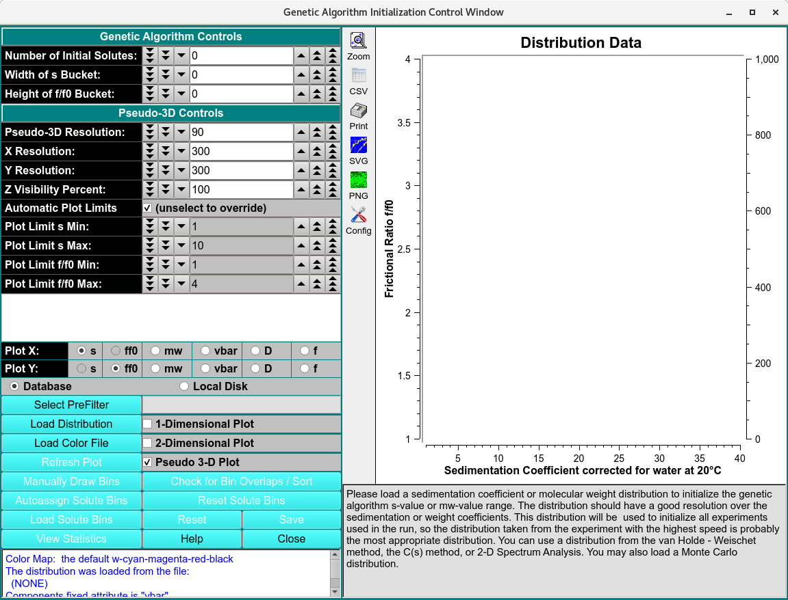
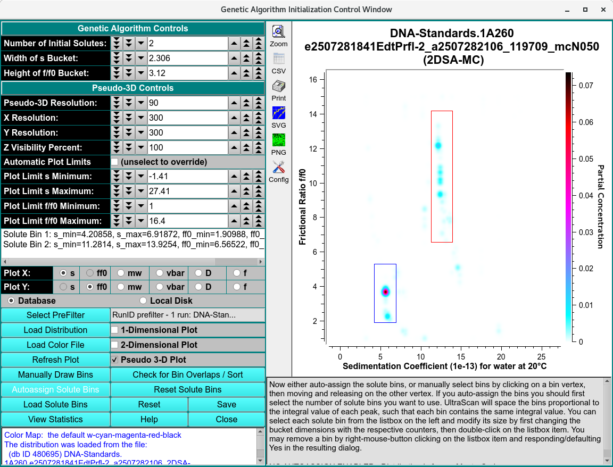
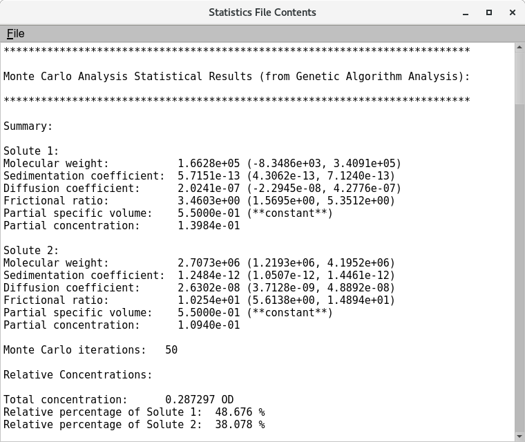

Genetic Algorithm Initialization¶
When the Initialize Genetic Algorithm module is opened from Velocity, a Etc Dorectory Cleaned dialog will open. Press OK to continue to the Genetic Algorithm Initiation Window.

Etc Directory Cleaned
Press OK to continue to the Genetic Algorithm Initiation Window.

Genetic Algorithm Initiation Window
Solute distribution data can be used to generate data for use with Genetic Algorithm analysis programs. The output data results from choosing bins (or buckets) around solute points. These buckets can be modified for better results. Once they are as desired, data for Genetic Algorithm analysis can be generated and output. The input data may come in one of two flavors, each of which is treated differently. The data is either 2DSA type or Monte Carlo. The 2DSA is relatively sparse and generally requires fashioning buckets containing a single point. For a Monte Carlo distribution, buckets should contain multiple points and be constructed around clusters.

Genetic Algorithm populated with Monte Carlo Model
Functions¶
Genetic Algorithm Controls
Number of Initial Solutes: |
Choose the number of initial solute buckets when using the Autoassign Solute Bins option. If 0 or greater than the actual number of input solute points, all solute points will be binned. Otherwise, this number limits initial bins to those derived from the specified number of highest-concentration solute points. |
Width of s Bucket: |
Set the horizontal width of buckets for autoassigning or for resizing via list box double-click. Note that this may alternately read “Width of mw Bucket:”. |
Height of f/f0 Bucket: |
Set the vertical height of buckets for autoassigning or for resizing via list box double-click. Note that “bucket” and “bin” are used interchangeably herein. |
Pseudo-3D Controls
Pseudo-3D Resolution: |
Choose near-100 flattening parameter for Gaussian distribution of frequency points. |
X Resolution: |
Choose the number of pixels to represent the full X (Sedimentation Coefficient or Molecular Weight) data range. |
Y Resolution: |
Choose the number of pixels to represent the full Y (Frictional Ratio) data range. |
Z Visibility Percent: |
Choose the percent of the Z (Frequency) range to add below the minimum Z in order to affect display of faint values. |
Automatic Plot Limits |
Select to automatically set X and Y plot range limits or unselect to allow explicitly setting these values. |
Plot Limit s Min: |
Choose the lower plot limit for sedimentation (or other X). |
Plot Limit s Max: |
Choose the upper plot limit for sedimentation (or other X). |
Plot Limit f/f0 Min: |
Choose the lower plot limit for f/f:sub:0 (or other Y). |
Plot Limit f/f0 Max: |
Choose upper lower plot limit for f/f:sub:0 (or other Y). |
(list box) |
This space is populated with lines giving the dimensions of bins generated manually or automatically, and displayed in the plot to its right. Clicking of a line causes the associated bin plot borders to be highlighted. Double-clicking a line results in the associated bin dimension being modified according to the bucket width and height values in the counter above. A right-mouse-button click of a line signals removal of the bin, if you default or click Yes in the resulting dialog. |
Plot X: |
Select one of the radio buttons to the right of this label to choose the X dimension of 3-D plots. |
Plot Y: |
Select one of the radio buttons to the right of this label to choose the Y dimension of 3-D plots. |
Database |
Select to specify data input from the database. |
Local Disk |
Select to specify data input from local disk. |
Data Input and Outout Controls
Select PreFilter(s) |
Open Select Pre-Filter to select Run IDs on which to pre-filter lists of models for loading. This can significantly reduce model loading time, particularly with large model counts in the database. The text box to the right of this button will display a summary of runs selected as Pre-filters. |
Load Distribution |
Load model distribution data as specified through a Model Loader dialog. |
Load Colour File |
Load a color map for Z dimension display as specified through Load Colour File dialog. |
1-Dimensional Plot |
Select to plot in one dimension, displaying the selected X-axis variable on the horizontal axis and the partial concentration on the Y-axis as a bar plot. |
2-Dimensional Plot |
Select to plot in 2 dimension, excluding the Z dimension. |
Pseudo 3-D Plot |
Select to plot in pseudo three-dimension, using a loaded or default color map to represent the “Z” dimension. |
Refresh Plot |
Re-draw the plot. This is sometimes necessary when one or more control parameters are changed. |
Manually Draw Bins |
Specify that you are about to manually draw bins in a 2-D or 3-D plot. Each bin is drawn by clicking and holding on one bin vertex, moving the mouse and showing a rubber band rectangle, then releasing when the diagonal vertex point is reached. |
Check for Bin Overlaps / Sort |
Click this button to check that no drawn bins overlap and to sort bins so they are ordered by the X,Y upper-left vertex. |
Autoassign Solute Bins |
Automatically draw bins around solute points, using bucket width and height values specified. If a number of initial solutes value is first specified, only that number of the bins with the highest concentration values will be initially drawn. Where bins overlap, additional rectangles will be drawn using the portion of the second rectangle that is not overlapping. |
Reset Solute Bins |
Erase bins from the plot and internal data base, so that a new set may be generated. |
View Statistics: |
View a text dialog that shows detailed statistics on drawn bin points. |
Window Controls
Save: |
Output a file with Genetic Algorithm data based on generated bins. If a Monte Carlo distribution was loaded, also generate a text file with detailed analysis. |
Reset |
Reset parameters to their default settings. |
Help |
Display this detailed Genetic Algorithm Initialize help. |
Close |
Close all windows and exit. |
Statistics File Output¶
Once the bins for Genetic Algorithm analysis are selected, detailed statistical analysis can be performed on the Monte Carlo models. Click on ‘View Statistics’ to generate the detailed analysis.

Summary Statistics File Content
For each selected bin, the GA statistical analysis includes the mean, along with the lower and upper 95% confidence intervals for the molecular weight, sedimentation coefficient, diffusion coefficient, and frictional ratio. The partial specific volume and partial concentration are treated as constant values. For a more detailed analysis, refer to the Detailed Results section of the report.
{kind=link}
{kind=link}
Detailed Statistics Results of GA Initialization Analysis